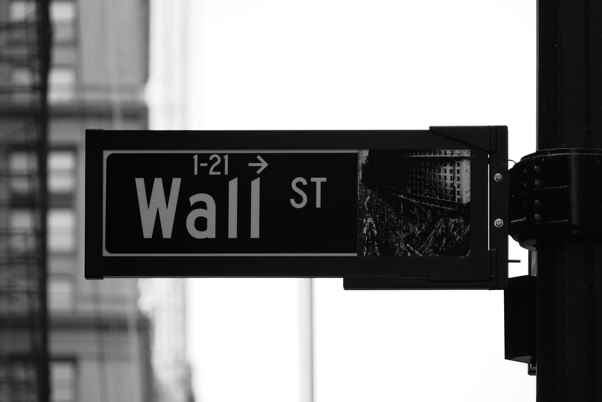

Home
Courses
About
Here you will find all of our lessons:
Supply & Demand
In this lesson we will discuss what is supply and demand. Besides that we will dive into the topic of market equilibrium.
Banking
Banks play a crucial role in the financial system by facilitating the flow of money, providing various financial services, and ensuring economic stability. They are vital for individuals, businesses, and governments to manage their finances efficiently, access credit, and safeguard their savings.

Securities
Securities are versatile instruments that represent financial value and can be traded in the market. They come in various forms, such as stocks, bonds, options, and futures, each with its unique characteristics and purposes.
Forex & currencies
In today's lesson, we will delve into the fascinating world of currencies and the foreign exchange market, commonly known as forex. Understanding how currencies are traded, the factors that influence their values, and the impact of exchange rates on global economics are crucial for anyone interested in finance, trade, or global economics.
Micro & Macro economics
These are the two main branches of economics. Macroeconomics deals with the economic activity in aggregate such as national income, overall price levels, and inflation. Microeconomics focuses on individual and business decisions regarding the allocation of resources and the prices of goods and services.
Fiscal Policy and Monetary Policy
Fiscal policy involves government spending and tax policies to influence macroeconomic conditions. Monetary policy, managed by a nation's central bank, deals with the control of money supply and interest rates to achieve economic objectives such as controlling inflation and ensuring price stability.
In development
In development